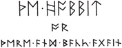
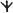
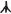
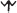
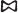
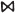
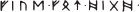
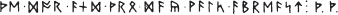
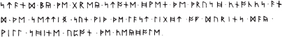

This is a story of long ago. At that time the languages and letters were quite different from ours of today. English is used to represent the languages. But two points may be noted. (1) In English the only correct plural of dwarf is dwarfs, and the adjective is dwarfish. In this story dwarves and dwarvish are used*, but only when speaking of the ancient people to whom Thorin Oakenshield and his companions belonged. (2) Orc is not an English word. It occurs in one or two places but is usually translated goblin (or hobgoblin for the larger kinds). Orc is the hobbits’ form of the name given at that time to these creatures, and it is not connected at all with our orc, ork, applied to sea-animals of dolphin-kind.
Runes were old letters originally used for cutting or scratching on wood, stone, or metal, and so were thin and angular. At the time of this tale only the Dwarves made regular use of them, especially for private or secret records. Their runes are in this book represented by English runes, which are known now to few people. If the runes on Thror’s Map are compared with the transcriptions into modern letters† †, the alphabet, adapted to modern English, can be discovered and the above runic title also read. On the Map all the normal runes are found, except

for X. I and U are used for J and V. There was no rune for Q (use CW); nor for Z (the dwarf-rune
may be used if required). It will be found, however, that some single runes stand for two modern letters: th, ng, ee; other runes of the same kind (
ea and
st) were also sometimes used. The secret door was marked D
. From the side a hand pointed to this, and under it was written:

The last Two runes are the initials of Thror and Thrain. The moon-runes read by Elrond were:
On the Map the compass points are marked in runes, with East at the top, as usual in dwarf-maps, and so read clockwise: E(ast), S(outh), W(est), N(orth).